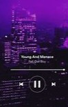
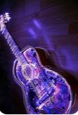
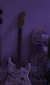

musong
your favorite songs quick access and free
DIE WITH A SMILE
the song "die with a smile" by lady gaga and bruno mars was made in 2024. the song is a modern classic mixing a soulful blend of soft rock and pop wjilst exploring the themes of love, loss and living with gratitude. the song instantly became a massive hit worldwide... click below to listen
APT.
the song "APT" by rose and bruno mars is a blend of pop and pop/punk. it was releaced in 2024 and is inspired by a korean drinking game named "apartment" The track celebrates themes of fun, and excitement. attracting m,illions of listeners worldwide. the song instantly became a hitned popularity...... click below to listen
wildflower
the song "wildflower" made by bilie eilish is a soft blend of folk and pop. the song explores themes of guilt and emotional conflict as billie reflects on dating a friends ex. the song was releaced in 2025 to her album "HIT ME HARD AND SOFT" and instantly became a global hit. .... click below to listen
timeless
"Timeless" by The Weeknd and Playboi Carti, released in 2024, merges nostalgic 80s synths with modern trap beats. The song reflects on themes of fame, legacy, and personal struggles, blending introspective lyrics from The Weeknd with Playboi Carti's dynamic energy. Its innovative production by Pharrell Williams and Mike Dean made it a global success, resonating with listeners and earning widespread acclaim.... click below to listen
genie in a bottle

"Genie in a Bottle" by Christina Aguilera is a 1999 pop hit that metaphorically expresses themes of desire, self-control, and empowerment. With its catchy melody and playful lyrics, the song became an iconic anthem of the late '90s pop era. although the song is old it became reborn in 2024-25..... click below to listen
set fire to the rain
"Set Fire to the Rain" by Adele is a powerful ballad from her 2011 album 21. The song reflects on heartbreak and emotional release, blending soulful vocals with dramatic instrumentation. It became one of her most iconic and beloved hits.... click below to listen
another love

"Another Love" by Tom Odell is an emotional piano-driven ballad that reflects on heartbreak and the struggle to open up to love again after past pain. Released in 2013, its raw vocals and poignant lyrics struck a chord with listeners worldwide, making it a modern classic.... click below to listen
everything i wanted
"Everything I Wanted" by Billie Eilish is a hauntingly introspective song released in 2019. It explores themes of dreamlike success, self-doubt, and her bond with her brother, Finneas, who produced the track.... click below to listen
sure thing
"Sure Thing" by Miguel is a soulful R&B track from his 2010 debut album All I Want Is You. The song uses creative metaphors to express unwavering love and commitment, making it a standout hit that resonated deeply with listeners it expresses multiple heartfelt emotions which really allows listeners to connect with the song....click below to listen
birds of a feather
Birds of a Feather" by Billie Eilish, released in July 2024, is a heartfelt new wave pop track from her album Hit Me Hard and Soft. The song explores themes of enduring love and deep emotional connection, inspired by the proverb "birds of a feather flock together." With poignant lyrics and a powerful vocal performance, Billie expresses a desire for lasting togetherness, making it one of her most romantic and emotionally vulnerable songs...click below to listen
somewhere only we know

"Somewhere Only We Know" by Keane is a beloved piano-driven ballad released in 2004 as part of their debut album, Hopes and Fears. The song evokes feelings of nostalgia and longing, with its emotive lyrics describing a special, secluded place of connection and solace. It's one of Keane's most iconic tracks, resonating with listeners worldwide....click below to listen
beautiful things
Benson Boone's "Beautiful Things" dives deeply into the bittersweet emotions of cherishing life's precious moments while grappling with the fear of their impermanence. The song pairs heartfelt, reflective lyrics with a powerful, piano-driven melody, creating an intimate atmosphere that resonates with listeners on a personal level. It’s a ballad of gratitude and vulnerability, emphasizing the fragility of relationships and the importance of appreciating what we have....click below to listen
Madhatter
"Mad Hatter" by Melanie Martinez, from her 2015 album Cry Baby, is a whimsical and dark pop track. It explores themes of self-acceptance and embracing one's quirks, using references to Alice's Adventures in Wonderland to highlight individuality and defiance against societal norms...click below to listen